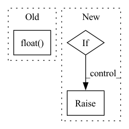

Pattern ID :18207
Before Change
for i in range(x.size(0)):
mask = Masks.get_ff_mask(height, width)
mask_all.append(mask)
mask = torch.from_numpy(np.asarray(mask_all)).unsqueeze(1).float()
ones = torch.ones(x.size(0), 1, x.size(2), x.size(3))
mask = ones * mask
if x.is_cuda:
mask = mask.cuda()After Change
if config["mask_type"] == "hole":
result = x * (1. - mask)
elif raise NotImplementedError("Not implemented mask type.")
return result, maskIn pattern: SUPERPATTERN
Frequency: 3
Non-data size: 3
Instances Fragment ID: 59850737
Project Name: sayednadim/global-and-local-attention-based-free-form-image-inpainting
Commit Name: aaa17ed332dc95db0f5900a43be179e26569b50c
Time: 2020-08-16
Author: smnadimuddin@gmail.com
File Name: model/mask.py
M Class Name: AnonimousClass
N Class Name: AnonimousClass
M Method Name: mask_image(2)
N Method Name: mask_image(2)
M Parent Class:
N Parent Class:
M File Name: model/mask.py
N File Name: model/mask.py
M Start Line: 40
M End Line: 49
N Start Line: 56
N End Line: 72
Before Change
// this modification will not affect the minimum computation
check_values(xs)
xs = torch.where(torch.isnan(xs), 1., xs.double())
out = torch.amin(xs.float() , dim=dim, keepdim=keepdim)
return out
After Change
Raises when the "mask" is not boolean.
if mask is not None:
if mask.shape != xs.shape:
raise ValueError(""xs" and "mask" must have the same shape.")
if not isinstance(mask, torch.BoolTensor):
raise ValueError(""mask" must be a torch.BoolTensor.")
// here, we put 1 where the mask is not satisfied, since 1 is the maximum value for a truth value.
// this is a way to exclude values from the minimum computation
xs = torch.where(~mask, 1., xs.double()) Fragment ID: 59850739
Project Name: bmxitalia/ltntorch
Commit Name: 158a1091d2819aed893737d67a9b902afc5ac10e
Time: 2022-03-28
Author: tommasocarraro96@gmail.com
File Name: ltn/fuzzy_ops.py
M Class Name: AggregMin
N Class Name: AggregMin
M Method Name: __call__(5)
N Method Name: __call__(4)
M Parent Class: AggregationOperator
N Parent Class: AggregationOperator
M File Name: ltn/fuzzy_ops.py
N File Name: ltn/fuzzy_ops.py
M Start Line: 1273
M End Line: 1275
N Start Line: 1156
N End Line: 1194
Before Change
torch.tensor
//
return torch.from_numpy(img.transpose(2, 0, 1)).float()
After Change
Returns:
torch.tensor
if is_torch_available():
import torch
img = img.transpose((2, 0, 1))
img = torch.from_numpy(img).float()
if img.max() > 1:
img /= 255
return img
else:
raise ImportError("You need to install PyTorch to use this method.")
def torch_to_numpy(img): Fragment ID: 59850744
Project Name: obss/sahi
Commit Name: 1666b4b318ac7bf2ce857a98e4528705ba1e802f
Time: 2022-05-28
Author: 34196005+fcakyon@users.noreply.github.com
File Name: sahi/utils/torch.py
M Class Name: AnonimousClass
N Class Name: AnonimousClass
M Method Name: to_float_tensor(1)
N Method Name: to_float_tensor(1)
M Parent Class:
N Parent Class:
M File Name: sahi/utils/torch.py
N File Name: sahi/utils/torch.py
M Start Line: 21
M End Line: 21
N Start Line: 44
N End Line: 57